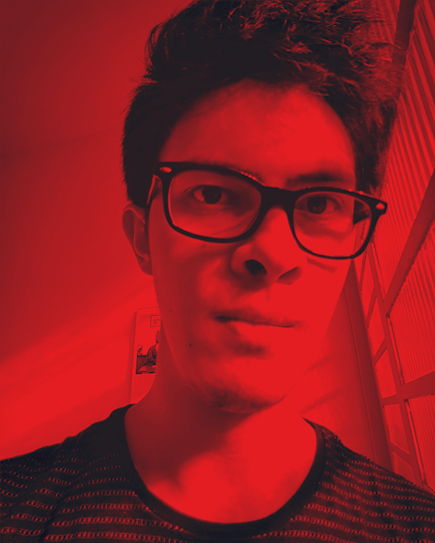

Iniciei minha carreira em 2011, e desde então minha paixão em relação à direção de arte cresce a cada projeto que me envolvo.
Sempre fui fascinado pela relação entre humanos e a tecnologia, e tento explorar isso em cada projeto.
Experiência
Ao longo da minha carreira tive a oportunidade de trabalhar com grandes marcas globais como M&M’s, Snickers, Pedigree, Whiskas, C&A, Santander, Bradesco, Turner Broadcasting, Natura and Outback.
Tenho orgulho de ter trabalhado em ótimos lugares, onde pude fazer parte de times incríveis.
AlmapBBDO (2016 - 2017)
ID/TBWA (2014 - 2016)
AgeIsobar (2013 - 2014)
Kanui (2013)
Agência Fórmula (2011 - 2013)